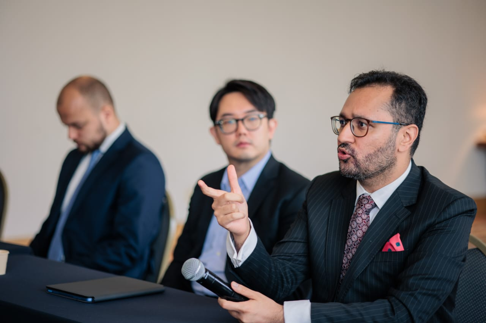

Broadcast, press and speaking.
Broadcast
Over 300 broadcast appearances as a political and legal analyst, including as a regular contributor to Pakistan TV, the country's international broadcast channel. Coverage spans Pakistan's national security posture, South Asian strategic dynamics, active conflict in the Middle East, the geopolitics of financial regulation, and global capital flows. Officially appointed as Pakistan TV's South America Correspondent — reporting from São Paulo, Brazil.
Safi Ghauri on Regime Change in Venezuela — Pakistan TV Newsroom with Sana Maqbool. Safi's segments begin at 17:00 and 27:00.
International press
Regional and specialist press
Academic & institutional
Speaking Engagements

Safi Ghauri at the DARTE Digital Assets Roundtable Experts series, co-organised by the European Commission and UNIDROIT, São Paulo, March 2026.
Global Governance & Intergovernmental
| Event | Date | Role & Context |
|---|---|---|
| Horasis Global Summit, University of São Paulo | Oct 2025 | Speaker on digital assets regulation. 1,000 leaders from 50 countries. Opened by the Vice Governor of São Paulo state. |
| COP30 Side Events, Belém, Brazil | 2025 | Speaker on blockchain technology for climate finance infrastructure. UN climate conference. |
| UNODC Sensitization Workshop for Terror Financing Stakeholders on use of Cryptocurrencies and Dark Web | 2023 | Trainer. United Nations Office on Drugs and Crime. Funded by U.S. Embassy / INL. |
| FATF Panel on Cryptocurrencies, Pakistan | 2023 | Panellist. Financial Action Task Force. |
Major International Conferences
| Event | Date | Role & Context |
|---|---|---|
| DARTE — European Commission + UNIDROIT, World Trade Center São Paulo | Mar 2026 | Panellist. Co-organised by European Commission and UNIDROIT. MiCA and Travel Rule across Latin America. |
| Stellar Meridian, Copacabana Palace, Rio de Janeiro | Sep 2025 | Speaker. 1,200+ attendees. Former Central Bank of Brazil President keynoted. PayPal PYUSD launched at conference. |
| ETH Latam, São Paulo | 2025 | Panellist, closed-door high-level regulatory session with ETH Latam leadership. |
| Singularity by Stellar, Goa, India | Feb 2026 | Legal mentor on digital assets and regulation. |
| Web3Experts Brazil, São Paulo | Jun 2026 | Speaker. Session on mapping regulatory pathways for crypto and blockchain companies in Brazil — covering BACEN licensing, VARA-to-Brazil corridors, MiCA considerations, and compliance for Brazilian founders. |
Regulatory & Institutional
| Event | Date | Role & Context |
|---|---|---|
| Panel on Chinese Infrastructure Contracts, Islamabad | 2023 | Invited address on interpretation and commercial implications of Chinese infrastructure contracts, delivered to civil service and policy officers. |
| NEPRA Blockchain in Energy Trade Webinar, Pakistan | Jun 2023 | Presenter alongside NEPRA Chairman Tauseef H. Farooqi. |
| Training Civil Servants — Freedom of Expression, Islamabad | 2023 | Trainer for government officials. |
| Workshop Speaker — NIC Islamabad | Jun 2026 | Delivered a workshop on Unlocking the South American Market for Tech Startups at NIC Islamabad, Pakistan's flagship government-backed incubation programme under the Ministry of IT & Telecommunication and Ignite–National Technology Fund. Covered LatAm market entry strategy, legal frameworks for foreign companies, cross-border investment pathways, and expansion steps for Pakistani tech founders. |
| Google Developers Club — Web3 Panel | 2022 | Panellist. |
Multi-Year Institutional Judging
| Event | Date | Role & Context |
|---|---|---|
| IMechE Speak Out for Engineering — UAE nationals, Middle East regionals, Pakistan nationals, Africa regionals, Global finals | 2018–2024 | Distinguished Judge, all tiers, every year since 2018. UK Institution of Mechanical Engineers. |
| IMechE Abul Kalam Design Challenge, National Pakistan | 2019 | Distinguished Judge. |
Speaker Bios
Download Approved Headshots →Safi Ghauri, a Dubai-based barrister and General Counsel to digital-asset companies.
Safi Ghauri is a Dubai-based barrister and General Counsel to digital-asset and frontier-technology companies, and Managing Partner of Esquare Legal. He is also a geopolitical analyst with more than 300 broadcast appearances and Pakistan TV's South America Correspondent.
Safi Ghauri is a Dubai-based General Counsel to digital-asset and frontier-technology companies, with 18 years in licensing, regulation, capital markets and disputes. He heads the legal function at InvoiceMate, Tharwa Finance and The Game Company, two of them on the UAE Future 100 list, and represents the world's second-largest crypto exchange before Pakistan's Virtual Assets Regulatory Authority. Earlier, he built the legal and compliance base behind Fasset's VARA licence and Series A, and secured Pakistan's first BNPL licence from the SECP for QisstPay. He is Managing Partner of Esquare Legal, the UAE-licensed, Dubai-headquartered crypto-native firm he founded in 2009, and a Partner of Tahota Law Firm. His litigation record includes Pakistan's largest defamation award (PKR 100 million) and a cryptocurrency matter won before the Supreme Court of India, and he acted for the Chinese investors in the USD 4.2 billion RUDA project. Called to the Bar of England & Wales at Lincoln's Inn and licensed to practise in the UAE, Pakistan and Brazil, he trained at Clyde & Co in London. He is also a geopolitical analyst with over 300 broadcast appearances and Pakistan TV's South America Correspondent, has spoken at Horasis, COP30 and the European Commission and UNIDROIT's DARTE series, and is a UNODC master trainer on crypto crime and terrorist financing.
Speaking Topics
Booking
For broadcast commentary, speaking invitations, panel bookings and media enquiries.
| Location | Dubai, UAE (also São Paulo and Islamabad; remote by arrangement) |
| Languages | English, Urdu |
| Direct contact | safighauri@esquarelegal.com Monitored daily. For same-day segments, put the air time and time zone in the subject line. |
Clips
Pakistan TV Newsroom, Venezuela — segment 1 (from 17:00)
Pakistan TV Newsroom, Venezuela — segment 2 (from 27:00)